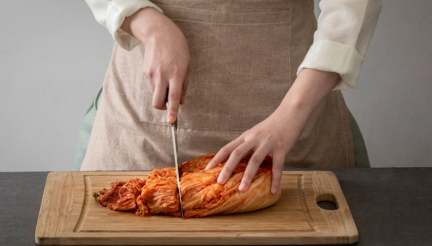
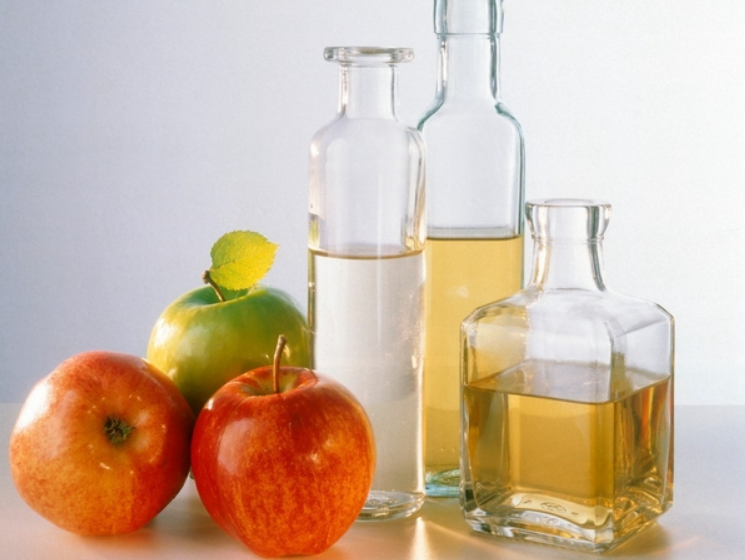
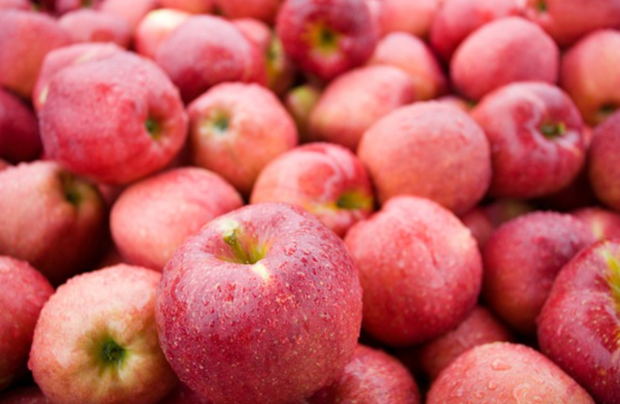

🏠 김치통 냄새제거 어떻게 세척하는 방법이 편할까?
용인 하수구막힘 전문 시공 후기

📋 작업 개요
- 위치: 용인
- 서비스 유형: 하수구막힘, 배관청소, 고압세척
- 작업 일시: 2023. 4. 2. 22:34
- 업체명: 하수구수사대 (010-5615-2118)
🔍 문제 상황
반갑습니다. 하수구수사대입니다:)
날씨가 추워지면 1년 중 최대 행사인 김장을 하는 가정들을 쉽게 찾아볼 수 있습니다. 좀 더 용이하게 김치를 보관할 수 있게 되어 각자의 입맛과 취향에 맞도록 김치를 발효하여 먹는 일도 쉬워졌습니다. 김치는 한국인들이 너무 사랑하고 뛰어난 맛을 자랑하지만 의외로 보관이 어렵다고 생각하는 분들도 많이 있습니다. 김치의 가장 큰 애로사항은 바로 냄새에 있다고 해도 과언이 아닙니다.
김치냉장고에 김치를 보관하다 김치를 꺼내기 위해 냉장고 문을 오픈했을 때 풍기는 냄새뿐만 아니라 김치통에서 나는 냄새까지 무시하기에는 다소 무리가 있을 정도로 강력한 냄새를 자랑하고 있습니다. 아무리 깨끗이 설거지를 한다고 해도 김치통에 냄새가 배일 경우 다른 음식을 보관하기 힘들 정도로 강한 냄새가 나기도 합니다. 김치를 담글 때 재료로 사용하는 파와 마늘과 같은 진한 향을 가진 재료들이 뒤섞여 있기에 설거지로는 일반적인 냄새 제거가 어려울 수 있습니다.
오늘은 김치통 냄새제거 방법에 대해서 자세히 알려드리겠습니다.
🔎 원인 분석
💡 전문가 진단: 식초
식초를 이용할 수 있습니다. 산성 성분인 식초를 1 대 2 정도로 물에 섞어서 김치통의 반 정도를 채워 흔들고 뚜껑을 닫는 방법으로 김치통의 모든 면에 물이 닿을 수 있도록 흔들어 하루 정도 두시면 쉽게 제거가 가능합니다.
김치통이 뚜껑을 덮어 뒤집어도 새지 않는 형식이라면 면을 한 번씩 뒤집어 주게 된다면 효과가 더욱 뛰어날 수 있습니다. 하루 정도 방치한 김치통을 흐르는 물로 깨끗이 씻어 닦아내고 햇볕에 건조해 주면 탁월하게 냄새가 제거되는 것을 경험할 수 있게 됩니다.
사과 껍질
냄새 초자를 흡수하는 특성을 가진 사과를 껍질이나 사과 조작을 김치통 안에 넣어 뚜껑을 닫은 채 하루 정도 두게 되면 냄새가 옅어지는 것을 확인할 수 있습니다. 사과뿐만 아니라 깻잎, 상추, 부추와 같은 푸른 잎채소들도 김치통 냄새제거에 좋은 성분을 가지고 있으니 활용하시면 좋습니다.
소주와 식초

🔧 작업 과정
소주와 식초를 섞어서 이용할 수 있습니다. 소주의 알코올 성분이 냄새를 머금고 증발시키고 소독 효과까지 더불어 발생시킬 수 있기에 효과적입니다. 소주를 마시고 남게 되면 소주 반 병 정도에 반컵 정도의 식초를 섞어서 넣어주시면 좋은 효과를 얻을 수 있습니다.
소금이나 설탕
소금이나 설탕을 이용하는 것도 좋은 방법이 될 수 있습니다. 설탕과 물을 1 대 3 비율로 섞어 김치통에 넣고 뚜껑을 덮은 다음 다른 면에 닿을 수 있도록 일정한 텀으로 흔들어주면 좋습니다. 만약 소금을 이용하신다면 적정량의 물에 굵은소금을 2스푼 넣고 뚜껑을 덮은 뒤 동일하게 통을 흔들어 주시면 냄새 제거에 탁월한 효과를 볼 수 있습니다.
쌀뜨물
밥을 할 때 나오는 쌀뜨물을 이용해서도 냄새 제거가 가능하며, 김치통 가득 쌀뜨물을 붓고 식초를 소량 넣은 다음 뚜껑을 덮어 2-3일간 보관해 주신 뒤 흐르는 물에 깨끗하게 통을 세척해 주시면 아주 간단하게 냄새 제거를 하실 수 있습니다.
과탄산소다나 베이킹소다
마지막으로 과탄산소다나 베이킹 소다를 이용하여 할 수 있습니다. 따뜻한 물에 과탄산소다나 베이킹 소다를 잘 풀어준 다음 김치통에 미지근한 물을 가득 채워 소량의 식초를 넣고 반나절 정도 방치하면 효과적으로 냄새를 제거할 수 있습니다.
김치냉장고는 특유의 진한 냄새 때문에 냉장고 청소를 자주 하는 분들도 많이 볼 수 있습니다. 김치통의 냄새가 냉장고 냄새로 번지는 경우가 많기 때문에 냉장고 청소와 김치통 냄새제거를 병행하는 것이 효과적이며 김치통의 고무패킹도 분리하여 세척하시면 뛰어난 효과를 얻을 수 있으리라 생각합니다.


✅ 작업 완료
오늘 하수구수사대에서 알려드린 정보가 김치냉장고와 김치통을
깨끗하게 관리하시는 데 있어서 도움이 되셨으면 좋겠습니다.

⚠️ 하수구 배관 막힘 예방 및 관리 가이드
- ✅ 머리카락, 비닐, 물티슈 등 물에 분해되지 않는 이물질은 하수구 유입을 절대 금지해 주세요.
- ✅ 하수구 거름망을 씌우고 모여진 이물질은 주기적으로 쓰레기통에 바로 비워주셔야 합니다.
- ✅ 배관 노후가 심할 경우 이물질이 더 쉽게 걸리므로 주기적인 배관 세척(고압세척 등)을 권장합니다.
- ✅ 작업 후 1년 이내 재발 시 하수구수사대에서 무상 A/S 보증 서비스를 제공합니다.
💡 핵심 정리
- 확실한 장비 작업(내시경 점검 및 샤프트 스케일링)으로 원인을 뿌리 뽑습니다.
- 작업 후 1년 이내에 동일한 부위 재발 시 100% 무상 A/S 서비스를 보장합니다.
- 서울 · 경기 · 인천 전 지역에 24시간 언제든 긴급 출동할 수 있도록 항시 대기 중입니다.
❓ 자주 묻는 질문 (FAQ)
🚨 용인 하수구막힘 문제로 고민이신가요?
정확한 원인 진단과 확실한 시공으로 재발 없는 해결을 약속드립니다.
24시간 긴급 출동 | 서울 · 경기 · 인천 전지역 | 1년 내 재발 시 무상 A/S